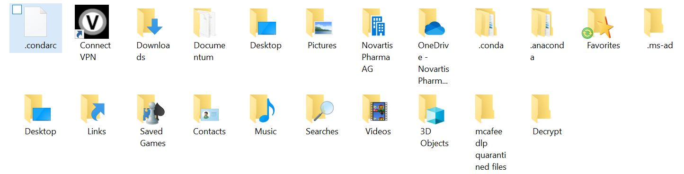
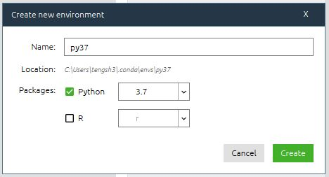
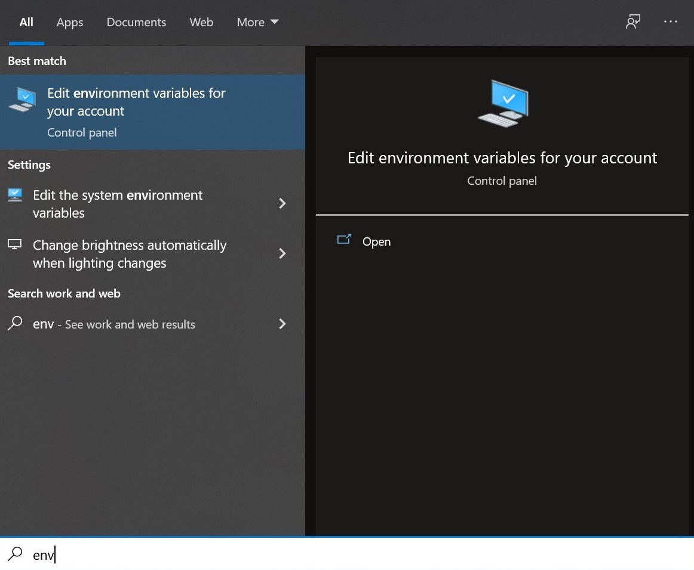
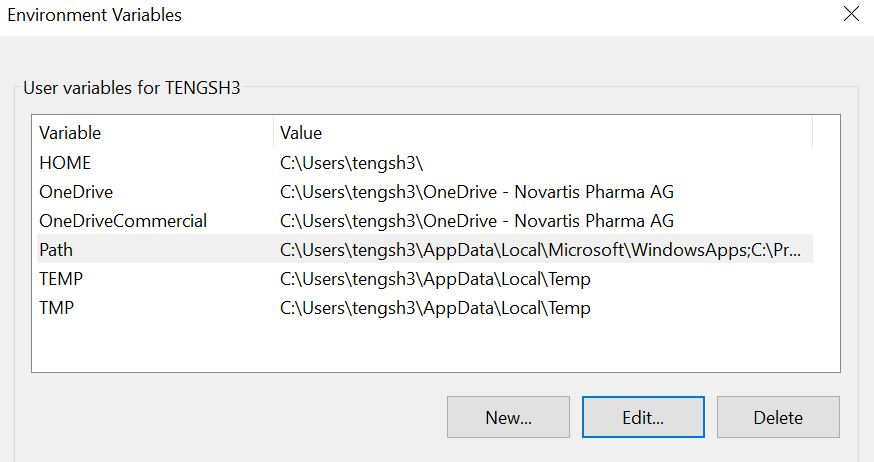
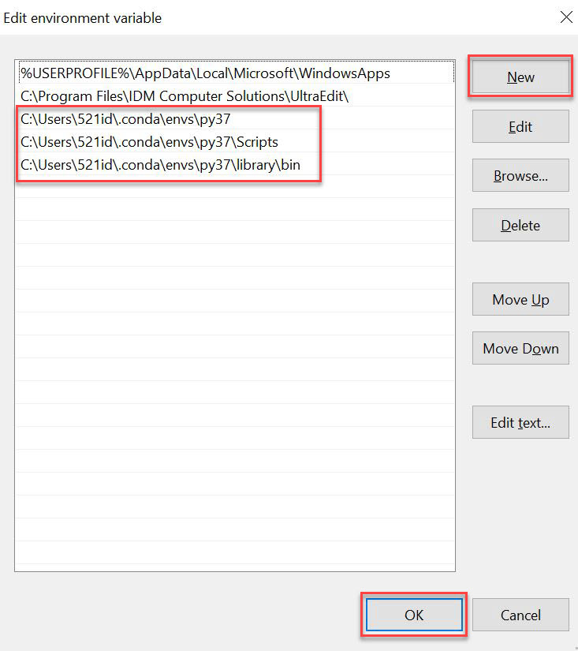

Create a file named .condarc located in the path: C:\Users\521id

Open the file .condarc using Notepad++ or UltraEdit as you like
Add below texts into this file (do not remove spaces or indents before “-” and “http”)
ssl_verify: true
channels:
- defaults
- https://mirrors.tuna.tsinghua.edu.cn/anaconda/pkgs/main/
- https://mirrors.tuna.tsinghua.edu.cn/anaconda/pkgs/free/
proxy_servers:
http: http://ap-cnzj-proxy.ap.novartis.net:2011
https: http://ap-cnzj-proxy.ap.novartis.net:2011
show_channel_urls: true
Save and quit
Open Anaconda Navigator to create your own environment. (Be patient after clicking Create and remember the environment name) 
Now you can install any application that you needed e.g. Jupyter Notebook, VS Code in your own environment.
Search “env” in windows search. Choose Edit environment variables for your account. 
Choose Path, and then click Edit. Then click New to add below environment variables. (“py37” is the environment name which is created in Anaconda Navigator and you can type in your own)  
Open Anaconda Prompt (your envr name). Install packages using below command lines.
pip install --proxy=http://ap-cnzj-proxy.ap.novartis.net:2010 -U flask (package name) --user -i https://pypi.tuna.tsinghua.edu.cn/simple
Open Command Prompt by press Windows + R and type “cmd”. Install packages using below command lines.
C:\Users\521id\.conda\envs\your envr name\python.exe -m pip install --proxy=http://ap-cnzj-proxy.ap.novartis.net:2010 -U flask (package name) --user -i https://pypi.tuna.tsinghua.edu.cn/simple
Keep learning and enjoy coding!